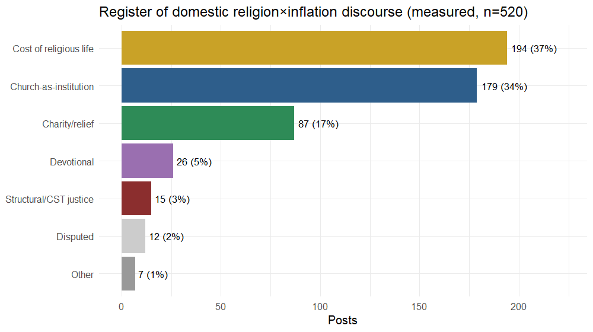
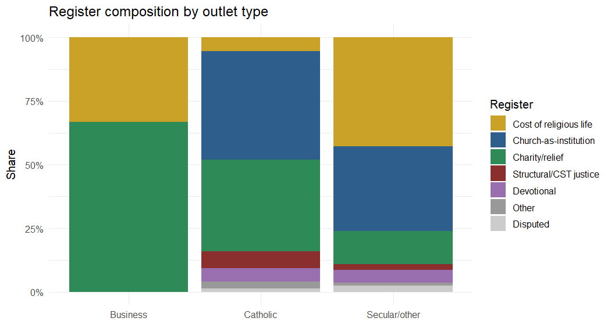
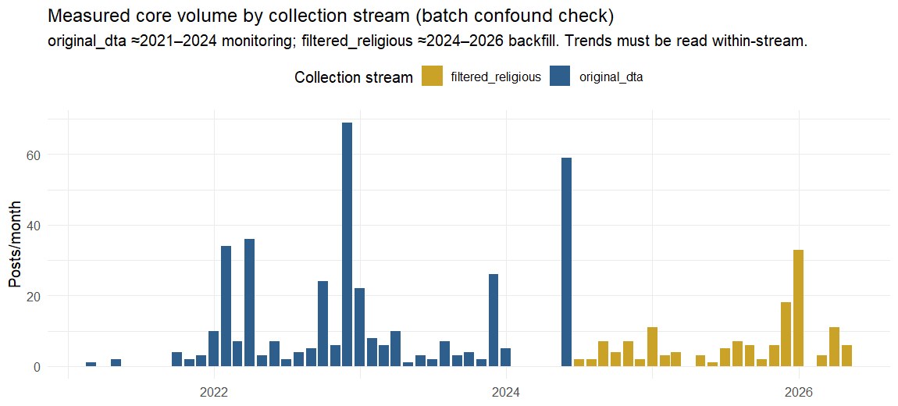
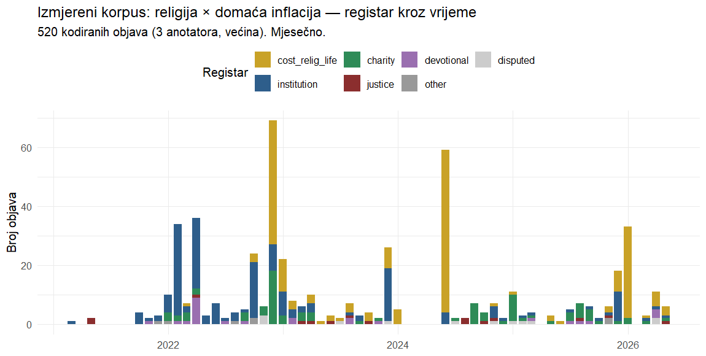
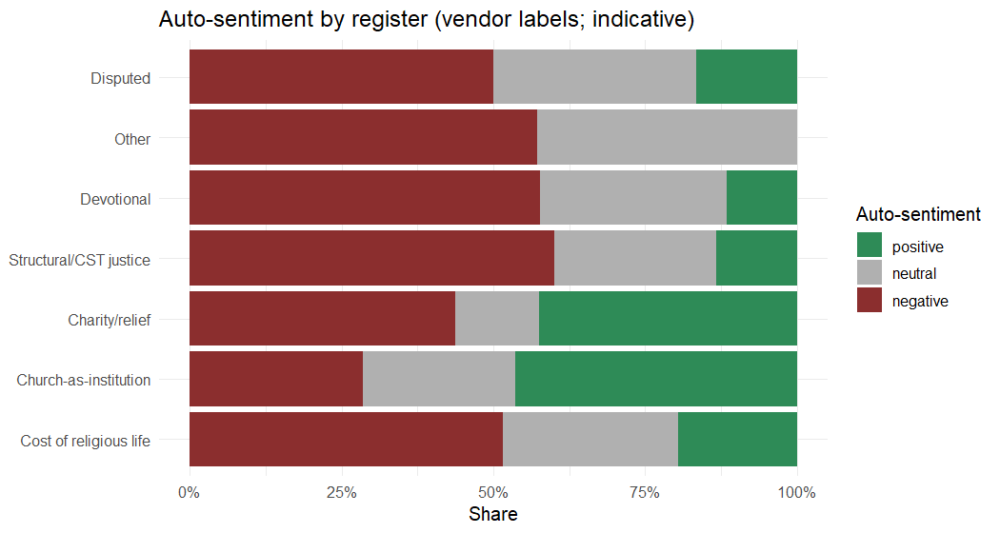

Costlier candles, quiet prophets: how religion meets inflation in the Croatian digital media space, 2021–2026
First draft — v1.1 · 2026-06-30 · DigiKat / HKS (PI: L. Šikić) Status: working manuscript, revised after a numeric-verification pass (all table numbers confirmed) and a hostile peer-review pass. v1.1 changes: temporal claims now read within collection stream (batch confound); the outlet “division of labour” demoted to a hypothesis (Catholic n=75, 75% one aggregator); register ordering hedged to a ~72% macro-register; justice reported as 3% floor / ≤8% broad; “prophetic conduct” reframed as “digital-public visibility”; coverage/platform figures corrected. Response log: REVIEW_RESPONSE.md. All corpus numbers are computed from the coded core; figures/tables in output/. HICP overlay, a stream-conditioned re-coding, and human double-coding remain pending (see §7). Companion documents: PROPOSAL_v2_broadened.md, VALIDATION.md, ANALYSIS_READY.md, LITERATURE.md.
Abstract
Catholic Social Teaching (CST) assigns the Church a distinctive voice in economic hardship: to name inflation as an injustice that falls hardest on the poor. We ask what that voice actually sounds like in a national digital media space during a cost-of-living shock. Using the DigiKat corpus — 710,307 religion-salient Croatian/Bosnian media posts (2021–2026) — we isolate every post that mentions inflation and, crucially, distinguish genuine religion–inflation linkage from incidental co-occurrence. Most co-mentions prove incidental; after coding 1,450 candidates with three independent annotators (inter-annotator agreement 0.97) and removing foreign-country inflation, a measured domestic core of 520 posts remains — 0.07% of the (web-portal-dominated) corpus and 6.5% of inflation-mentioning posts. Within it, religion meets inflation overwhelmingly as an economic object: a combined macro-register of the rising cost of religious life and the Church-as-institution accounts for ~72% (individually 37% and 34% — an ordering within coding noise). Charity accounts for 17%, while the structural / CST justice register is marginal — 3% strictly coded, at most ~8% if latent structural framing in adjacent posts is counted. We argue that the justice-centred frame Catholic Social Teaching foregrounds has low visibility in the digital public sphere — the Church surfaces mainly as an institution whose services became more expensive, not as a prophetic voice — while cautioning that media-visibility is a weak proxy for the institution’s actual conduct. Beyond the substantive finding, the paper offers a transferable methodological caution: in keyword-filtered corpora, co-occurrence is not engagement, and linkage must be measured, not counted. (Annotators are LLM-based with high inter-annotator agreement; human validation is pending.)
Keywords: digital religion; inflation salience; Catholic Social Teaching; media framing; Croatia; computational text analysis.
1. Introduction
Between 2021 and 2026 Croatia lived through the sharpest cost-of-living shock in a generation, compounded by the adoption of the euro on 1 January 2023. Catholic Social Teaching has an unusually explicit stance on such moments: from the “preferential option for the poor” to Pope Francis’s “this economy kills” (ova ekonomija ubija), doctrine frames economic hardship as a structural injustice the Church is called to name on behalf of the vulnerable. In a country where the Catholic Church is a dominant cultural institution and operates one of Europe’s more developed religious media ecosystems, one might expect the digital public sphere to carry an audible religious-economic voice when prices spike.
This paper asks a deliberately simple question: when inflation surfaces in religion-salient Croatian digital discourse, who carries it, and in what register? We do not assume the Church is loud on the economy; we measure whether it is, and how. The answer turns out to be less about prophecy than about price lists.
Two contributions follow. Substantively, we provide the first measurement of the religious register of inflation discourse across an entire national digital media space, and document a gap between CST’s normative promise and observed practice. Methodologically, we show that the naïve approach — counting posts where religion and inflation co-occur — overstates genuine engagement by roughly an order of magnitude (≈8,000 co-mentions versus 520 measured), and we demonstrate a validated pipeline (recall-oriented candidate generation followed by multi-annotator coding) for measuring linkage rather than co-occurrence.
2. Background
The study sits at the intersection of three literatures that are each well developed but rarely meet (full map in LITERATURE.md; a subset of citations there remain to be verified before final submission).
Inflation salience and media agenda-setting. Public and media attention to inflation is non-linear: it stays flat until inflation crosses a threshold of roughly 2–4%, then jumps (Korenok, Munro & Chen, 2026; Pfäuti, 2024). Coverage is less about the headline rate than about who is hurt and which component — the “heating or eating” framing of food versus energy (Champagne et al., 2024) — and the European Central Bank now maintains a dictionary-based media inflation-attention index (Aarab et al., 2025). Agenda-setting theory (McCombs & Shaw, 1972) is the backdrop, with an open question of whether media set or merely reflect attention (Wlezien & Soroka, 2024). This literature is almost entirely secular and Anglophone/ euro-area; it says nothing about the religious media sphere as an inflation channel.
CST economic framing. The theological distinction between charity (relieving symptoms) and justice (changing structures) maps closely onto Iyengar’s (1991) episodic-versus-thematic framing and gives us a measurable construct. The structural critique is not only a Francis-era phenomenon (Benedict XVI, 2009; Francis, 2013). But existing studies examine secular press coverage of poverty, not religious media as the storyteller.
Croatian Catholic media are well studied on identity, nation, and culture-war themes, but their coverage of the economy has never been measured, still less linked to a live cost-of-living shock.
The gap — and a fourth, methodological one. No work has asked what register religion takes when it meets inflation in a whole national digital space. And studies of “religion and X” in large corpora routinely equate co-occurrence with engagement; we show below why that is unsafe here.
3. Data and method
Corpus. The DigiKat master is a topical corpus of 710,307 Croatian/Bosnian media posts (2021-01 → 2026-06) retained by a religious-content filter (≥2 distinct religious-term matches). It is religion-salient posts across the whole media space, not a Catholic-outlet archive: secular mainstream outlets dominate. A provenance marker (data_source) reflects two collection batches (≈2021–2024 and ≈2024–2026) rather than a content distinction; we condition on it where relevant and treat cross-batch volume trends cautiously.
Inflation tagging. We tagged every post whose title or body matches an anchored inflation lexicon (inflacij*, poskup* “to become more expensive”, rast/porast/skok cijen* “price rises”, trošak života “cost of living”, kupovna moć “purchasing power”), deliberately excluding the bare word cijena “price” to avoid devotional false positives (e.g. “the price of salvation”). A metaphor guard removes figurative uses (“inflation of words/values”). This yields 8,019 clean inflation-mentioning posts (1.13% of the corpus).
Linkage, not co-occurrence — the key design choice. A long news article can mention inflation in one paragraph and a saint’s feast in another with no connection. We therefore measured, for each inflation post, whether a religious term (project lexicon of 95 terms, tightened for economic homonyms such as gospodarstvo “economy” vs Gospa “Our Lady”) appears within ±220 characters of an inflation mention. This proximity filter is deliberately recall-oriented (validated recall ≈0.89): it generates 1,450 candidate linked posts while accepting false positives, which the coding stage removes. We code the full linked candidate set (1,450), not the classifier’s narrower domestic-linked subset (1,103): the automatic foreign/domestic flag is unreliable (held-out precision ≈0.39) and would have wrongly shrunk the pool, so we let the annotators — not the flag — decide foreign versus domestic.
Coding. All 1,450 candidates were coded by three independent annotators (large-language-model annotators applying a fixed codebook), majority-adjudicated; 1,447/1,450 were coded by all three (the remaining three by two). Each post was labelled on four axes: whether it is genuinely about inflation/cost of living; whether religion is genuinely linked to the inflation content (vs. incidental, a geographic landmark, a metaphor, a hashtag, or a secular organisation containing a religious word, e.g. Crveni križ = Red Cross); whether the inflation is foreign or domestic; and, when linked, its register: cost of religious life (the price of religious goods/services rising), Church-as-institution (clergy/Pope/parish as actor or commentator), structural / CST justice (inflation as injustice to the poor), charity (Caritas/relief), devotional, or other.
Validation. On a stratified held-out sample of 80 posts (disjoint from any tuning data), inter-annotator agreement was high — infl 0.975, link 0.967, foreign 0.992 — confirming the constructs are reliably measurable; register is the harder judgement. The regex candidate-generator’s held-out precision for domestic linkage was modest (~0.38–0.46) with recall ~0.89, i.e. it is a filter, not a labeller; the full-pool coding independently confirmed this (45% of candidates confirmed genuinely linked). We therefore report coded figures throughout and never regex counts. Full protocol and metrics: VALIDATION.md.
Limitations of method are treated in §7; briefly, LLM annotators are not a human gold standard (a human double-coding pass is pending), the ~11% linkage-recall gap slightly undercounts, and the corpus is itself religion-filtered, so the “secular” comparison is secular outlets’ religion-adjacent output, not their full inflation coverage.
4. Results
4.1 Co-occurrence is not engagement
The path from corpus to measured core is steep (Table 1). Of 710,307 posts, 8,019 (1.13%) mention inflation. Of those, the recall-oriented filter flags 1,450 as candidate-linked; coding confirms only 652 as genuine religion–inflation linkage, of which 132 concern foreign inflation (Iran, Russia, the USA, Germany), leaving a domestic measured core of 520 posts — 0.07% of the corpus and 6.5% of inflation-mentioning posts. A naïve co-occurrence count would have reported the phenomenon as an order of magnitude larger than it is: of the 8,019 inflation-mentioning posts only 520 (6.5%) are genuine domestic linkage, and even among the proximity-flagged candidates just 45% survive coding — over half are incidental (see also output/linkage_over_time_v3.png).
Table 1. From corpus to measured core.
| Stage | n | % of corpus |
|---|---|---|
| Full religion-filtered corpus | 710,307 | 100.000 |
| Mentions inflation (clean) | 8,019 | 1.129 |
| Linked candidates (filter, recall ≈0.89) | 1,450 | 0.204 |
| Confirmed religion-linked (coded) | 652 | 0.092 |
| … foreign inflation | 132 | 0.019 |
| … domestic (measured core) | 520 | 0.073 |
4.2 Who carries it
Genuine religion×inflation discourse is overwhelmingly a secular-media phenomenon: 442 of 520 posts (85%) come from secular/mainstream outlets, 75 (14%) from Catholic outlets, and 3 from business press (Table 3). The single largest producer is the Catholic aggregator hkm.hr (56 posts), followed by mainstream titles (slobodnadalmacija.hr 17, novilist.hr 16, 24sata.hr 12, jutarnji.hr 11, večernji.hr 10). The Church’s own outlets are not where this discourse mainly lives.
4.3 The register of religious-economic discourse
The central result is the register distribution (Table 2, Figure 1). Religion meets domestic inflation as, in order: the cost of religious life (37.3%), the Church-as-institution (34.4%), charity (16.7%), devotional framing (5.0%), and — strikingly — structural / CST justice only 2.9% (15 posts). The prophetic register that doctrine would predict is, empirically, marginal.
Two cautions. First, the two leading registers are close, share vocabulary (crkva, biskup), and register was the lowest-agreement coding axis (0.46 on the held-out sample), so their ordering is within coding noise; the robust statement is that together they form an economic-object macro-register of ~72% (373 posts). Second, the 3% justice figure is a strict-coding floor: broadening to posts in other registers whose text carries latent structural language (chiefly 18 charity posts, e.g. Caritas discussing structural poverty) raises the upper bound to ~8% (43 posts). Justice is marginal on either definition, but “3%” should be read as a floor, not a point estimate.
Table 2. Register of the domestic core (n = 520).
| Register | n | % |
|---|---|---|
| Cost of religious life | 194 | 37.3 |
| Church-as-institution | 179 | 34.4 |
| Charity / relief | 87 | 16.7 |
| Devotional | 26 | 5.0 |
| Structural / CST justice | 15 | 2.9 |
| Disputed (pending human tiebreak) | 12 | 2.3 |
| Other | 7 | 1.3 |

The two dominant registers describe the Church as an economic object, not a moral voice: masses, church fees, weddings, funerals and pilgrimages that became more expensive (“cost of religious life”), and clergy or dioceses appearing in economic news as commentators or affected parties (“institution”).
An outlet pattern is visible but must be read cautiously (Table 3, Figure 2). The “cost of religious life” register is almost entirely a secular story — 189 of 194 such posts are secular outlets reporting that the Church raised its prices. A tempting reading is that Catholic outlets, when they engage, tilt toward charity (27/75 = 36% of the Catholic core vs 58/442 = 13% of the secular core). We do not press this claim. The Catholic subsample is small (n = 75) and 75% of it is a single aggregator, hkm.hr (56 posts), whose own top register is institution (27), not charity (18). Stripping hkm.hr leaves just 19 Catholic-outlet posts (9 charity, 5 institution, 2 justice, 2 cost, 1 devotional) — too thin for an outlet-type contrast, with wide confidence intervals on every cell of Table 3. We therefore report the direction as a hypothesis for a larger Catholic-outlet sample, not a finding. What is robust across outlets is the near-absence of the justice register (10 secular, 5 Catholic).
Table 3. Register by outlet type (counts).
| Register | Secular/other | Catholic | Business |
|---|---|---|---|
| Cost of religious life | 189 | 4 | 1 |
| Church-as-institution | 147 | 32 | 0 |
| Charity / relief | 58 | 27 | 2 |
| Devotional | 22 | 4 | 0 |
| Structural / CST justice | 10 | 5 | 0 |
| Other / disputed | 16 | 3 | 0 |

4.4 Temporal dynamics (read within collection stream)
An important caveat governs this section. The corpus is assembled from two collection streams — a monitoring query covering ≈2021–2024 (original_dta) and a filter-based backfill covering ≈2024–2026 (filtered_religious) — and they are not comparable: at 2024, where they overlap, 86% of original_dta candidates but only 21% of filtered_religious candidates survive coding as genuine domestic linkage. Cross-year volume must therefore be read within a stream, not across the 2024 seam (Figure 3a).
Within the clean 2021–2024 monitoring stream, the core rises sharply to a 2022 peak (201 posts) — the height of the energy shock — and declines thereafter (2023: 100; 2024: 64). This within-instrument decline is genuine, not a collection artifact. The 2022 peak coincides with Croatia’s inflation peak (HICP reached roughly 13% in late 2022; annual HICP ≈10.7% in 2022 easing to ≈8.4% in 2023 — Eurostat/DZS, approximate; a formal monthly HICP overlay is pending, §7). The later filtered_religious figures (2025: 66; 2026: 53) come from a different instrument and are not evidence of a continued decline.

Within that same 2021–2024 window, the register composition shifts (Figure 3, Table 4): the institution register dominates the 2022 shock (105 posts) — clergy commenting on the crisis — and recedes (38 in 2023, 9 in 2024), while cost-of-religious-life rises (41 → 39 → 61), tracking the church-fee revisions around the euro changeover (1 January 2023). The discourse thus appears to migrate from acute-crisis commentary toward institutional price adjustment. We treat this register shift as suggestive rather than established: part of it spans the stream seam and awaits a stream-conditioned re-coding. At no point, in either stream, does the justice register gain traction.
Table 4. Register by year (counts).
| Year | Institution | Cost-relig-life | Charity | Devotional | Justice | Other/disputed |
|---|---|---|---|---|---|---|
| 2021 | 8 | 0 | 0 | 1 | 2 | 1 |
| 2022 | 105 | 41 | 34 | 13 | 1 | 7 |
| 2023 | 38 | 39 | 11 | 5 | 5 | 2 |
| 2024 | 9 | 61 | 12 | 0 | 4 | 2 |
| 2025 | 16 | 13 | 26 | 4 | 2 | 5 |
| 2026 | 3 | 40 | 4 | 3 | 1 | 2 |

4.5 Tone
Vendor auto-sentiment (indicative only) splits meaningfully by register (Table 5, Figure 4). The core is 43% negative, 32% positive, 25% neutral overall — but “cost of religious life” is markedly negative (100 of 194, 51%), consistent with public grumbling about church price hikes, whereas “Church-as-institution” is the most positive register (83 of 179, 46%), consistent with pastoral or commentary framing. The rare justice posts lean negative (9 of 15).
Table 5. Auto-sentiment by register (counts; vendor labels, indicative).
| Register | Negative | Neutral | Positive |
|---|---|---|---|
| Cost of religious life | 100 | 56 | 38 |
| Church-as-institution | 51 | 45 | 83 |
| Charity / relief | 38 | 12 | 37 |
| Devotional | 15 | 8 | 3 |
| Structural / CST justice | 9 | 4 | 2 |

5. Discussion
The Church as economic object, not moral voice. The dominant way religion meets inflation in Croatian digital discourse is not the pulpit but the price list. Seven in ten linked posts (the ~72% economic-object macro-register) describe either the rising cost of religious life or the Church as an institution caught in economic news; charity adds a sixth; the structural-justice critique that Catholic Social Teaching foregrounds is marginal (3% strict, ≤8% broad). We frame this as a claim about digital-public visibility, not the Church’s pastoral conduct: homilies, pastoral letters and Caritas fieldwork are structurally under-represented in a media-monitoring corpus of news posts, so the low visibility of the justice frame is weak evidence about institutional silence as such (see §7). What the data support is that, in the national digital public sphere, the frame that surfaces around inflation is overwhelmingly the fee and the institution, not the prophecy.
A possible division of narrative labour (hypothesis). The register–outlet pattern hints at two storytellers: secular media supplying the “costlier candles” story — reporting, often critically and in negative tone, that the Church raised the price of masses, weddings and funerals around the euro changeover — and Catholic outlets leaning, in their thin non-aggregator tail, toward “quiet charity.” As §4.3 stresses, the Catholic subsample (n = 75, three-quarters from a single aggregator whose own lead register is institution) is too small to establish this contrast, so we advance it only as a hypothesis for a larger Catholic-outlet sample. What both kinds of outlet share is the near-absence of the prophetic, structural voice.
Mechanism and timing. Within the 2021–2024 monitoring stream, the pattern is consistent with an agenda-setting reading: the religious linkage flares during the acute 2022 shock (institutional commentary) and recedes as prices stabilise, while church-fee coverage rises around euro adoption. (The post-2024 leg of this story spans the collection seam and is provisional; §4.4.) On this within-stream evidence the dynamic looks closer to resonance than to setting — religion enters inflation discourse reactively, as an affected party, not as an agenda-setter for economic justice.
Why it matters. For sociology of religion, the finding qualifies accounts of the Croatian Church as a strong public actor: on the economy, at least, its digital-public presence is thin and non-prophetic. For media studies, it extends inflation-salience research into the religious sphere and shows the “who is hurt” framing has a specifically institutional variant — “who charges more.” For CST scholarship, it poses the question the absence raises: why the doctrinal justice frame does not travel into the national digital public sphere.
6. The methodological contribution: co-occurrence ≠ engagement
Independent of the substantive story, the study is a cautionary demonstration. Had we counted co-occurrence, we would have reported thousands of “religious engagements with inflation.” Measured, genuine domestic linkage is 520 posts. The gap is not noise to be tolerated but signal to be removed: keyword-filtered corpora manufacture incidental co-mention at scale. Our pipeline — anchored lexicons with metaphor and homonym guards, a recall-oriented proximity filter, and multi-annotator coding with reported inter-annotator agreement — is a reusable template for any “religion and X” (or, more generally, “A and B”) corpus study.
7. Limitations and next steps
- HICP overlay pending. The price-attention correlation (proposal Q1) awaits a formal monthly Croatian HICP series (headline, food, energy) aligned to the coded volume; the 2022 alignment is asserted here only from approximate published figures and must be verified against Eurostat/DZS.
- Annotators are LLM-based. Inter-annotator agreement is high (0.97), but a human double-coding of a ≥100-post slice is required before final publication to establish human-grounded reliability; 12 “disputed” register cases need a human tiebreak.
- Recall gap. The candidate filter’s linkage recall (~0.89) means the measured core slightly undercounts; the recall-corrected estimate is ≈584.
- Filtered baseline. Because the corpus is religion-filtered, “secular” here means secular outlets’ religion-adjacent output, so the secular–religious comparison is indicative, not a clean benchmark.
- Foreign flag remains the weakest classifier dimension; foreign/domestic assignment in the core rests on the coding, which is reliable in agreement terms (0.99), but the upstream flag is not, and removing 132 “foreign” posts is what turns 652 into the 520 headline — a human spot-check of the boundary is warranted.
- Collection-batch confound. The corpus mixes two collection streams (≈2021–2024 monitoring, ≈2024–2026 backfill) with very different confirmation rates at their 2024 overlap (0.86 vs 0.21). We therefore read temporal trends within stream and do not claim a decline across the 2024 seam. A stream-conditioned re-coding is the single highest-value next step; it will confirm or retract the register-shift story.
- Residual false positives. Even after majority coding, a handful of core posts are misclassified (e.g. a mall stabbing coded as cost-of-religious-life). A random-slice human recheck should estimate the residual-FP rate; a high-confidence subset (3/3 annotator agreement, 518 posts) is available for sensitivity analysis.
- Register ordering / justice floor. Register was the lowest-agreement axis (0.46); the 37% vs 34% ordering of the two lead registers is within noise (report the ~72% macro-register), and the 3% justice figure is a strict floor (≤8% broadly construed).
- No secular benchmark yet. Because the corpus is religion-filtered, we cannot yet say whether structural framing is rarer in religious than in secular inflation coverage. A benchmark on non-religious inflation posts is needed before any claim that the Church specifically underuses the justice frame.
Next: acquire HICP and build the attention-vs-prices figure; human-validate a slice; add the actor typology and optional CroSentilex sentiment; then revise toward submission (target venues: Journal of Media and Religion; Medijska istraživanja).
8. Conclusion
When prices rose in Croatia, religion did enter the digital conversation about inflation — but as an institution whose candles, masses and fees had become more expensive, and whose charities responded, far more than as a prophetic voice for the poor. Costlier candles, quiet prophets. The structural-justice register that Catholic Social Teaching foregrounds is, in the measured record, almost silent.
Appendix A. Reproducibility
Pipeline scripts (run against the master; see CLAUDE.local.md for the R path): 10_rerun_fixed.R (tagging + linkage + fixes) → 13_make_coding_pool.R (1,450 candidate pool + batches) → coding workflow code-candidate-pool (3 annotators × 20 batches, majority) → 14_finalize_coded.R (measured core) → 15_paper_analysis.R (tables + figures). Coded data: output/analysis_core_coded.{rds,csv} (520 posts) and output/coded_pool_full.csv (1,450). Tables: output/tables/. The measured-core file carries URL/FROM/text excerpts and is kept untracked; run /disclosure-check before sharing.
Appendix B. Coding protocol & validation
Codebook and the four axes are in §3; the held-out validation (n=80, IAA infl 0.975 / link 0.967 / foreign 0.992) and the classifier’s filter-not-labeller characterisation are documented in VALIDATION.md.
References (selected — verified in LITERATURE.md; some entries there remain UNVERIFIED)
- Aarab, I., Bańbura, M., Bobeica, E., & Leguay, T. (2025). Tracking inflation attention. ECB Economic Bulletin 6/2025.
- Benedict XVI (2009). Caritas in Veritate.
- Champagne, C., et al. (2024). “Heating or eating”: framing the cost-of-living crisis. Social Science & Medicine, 360, 117312.
- Francis (2013). Evangelii Gaudium.
- Geiß, S. (2022). Conditional agenda-setting. Communication Research, 49(2), 296–323.
- Gutiérrez, G. (1971/1973). A Theology of Liberation. Orbis.
- Iyengar, S. (1991). Is Anyone Responsible? University of Chicago Press.
- Korenok, O., Munro, D., & Chen, J. (2026). Inflation and attention thresholds. Review of Economics and Statistics, 108(3), 842–850.
- Lamla, M. J., & Maag, T. (2012). The role of media for inflation expectations. Journal of Money, Credit and Banking, 44(7), 1325–1350.
- McCombs, M. E., & Shaw, D. L. (1972). The agenda-setting function of mass media. Public Opinion Quarterly, 36(2), 176–187.
- Pfäuti, O. (2024). The inflation attention threshold. arXiv:2308.09480.
- Wlezien, C., & Soroka, S. (2024). Media and the public’s attention. American Political Science Review, 118(3), 1563–1569.